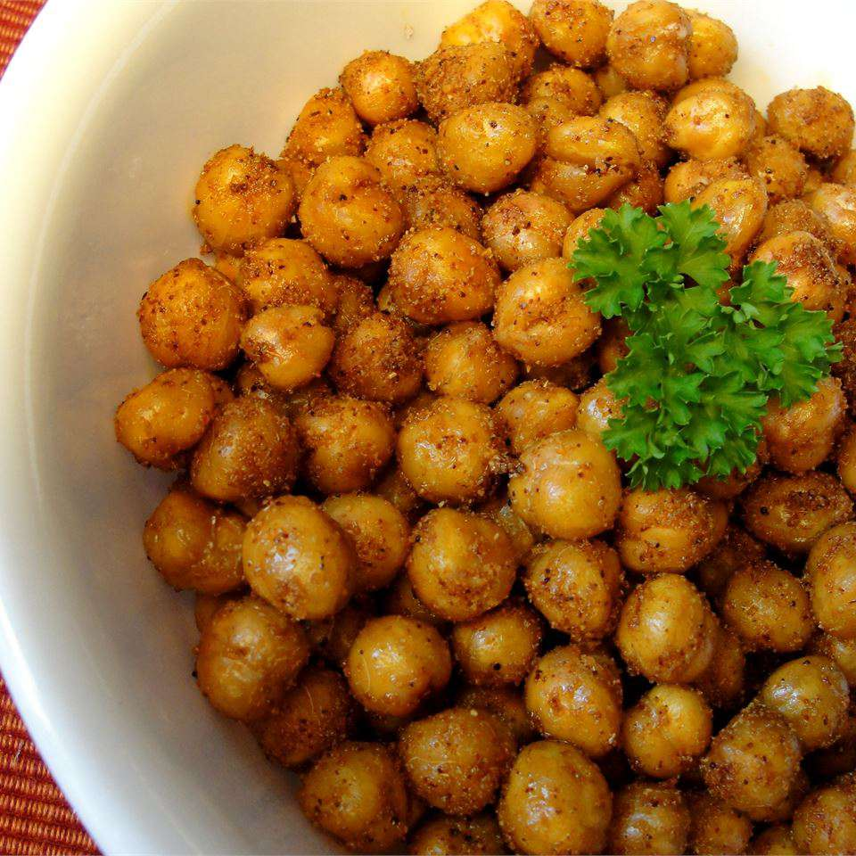

Crispy Chickpeas

Description
These roasted chickpeas are a great snack when you're craving chips but want something healthier. They're great on their own, but also yummy on top of a salad.
Ingredients
- 2 tablespoons olive oil
- 1 tablespoon ground cumin
- 1 teaspoon garlic powder
- ½ teaspoon chili powder
- 1 pinch sea salt
- 1 pinch ground black pepper
- 1 dash crushed red pepper
- 1 (15 ounce) can chickpeas, rinsed and drained
Steps
- Preheat the oven to 350 degrees F (175 degrees C).
- Whisk oil, cumin, garlic powder, chili powder, sea salt, black pepper, and red pepper together in a small bowl; add chickpeas and toss to coat. Spread in a single layer on a baking sheet.
- Roast in the preheated oven, stirring occasionally, until nicely browned and slightly crispy, about 45 minutes.
AllRecipes Source